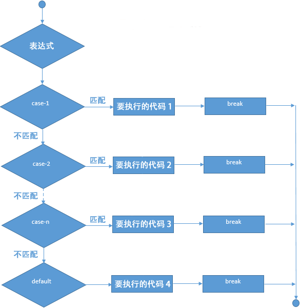

C# switch语句
C# 中的 switch 语句有些类似于《if else if 语句》，都可以根据表达式执行某个的语句块，其语法格式如下：
switch 语句的执行流程如下图所示：
【示例】根据输入的成绩来评定成绩的等级。
switch(表达式){
case value1:
//表达式的值为 value1 时，要执行的代码
break;
case value2:
//表达式的值为 value2 时，要执行的代码
break;
case value3:
//表达式的值为 value3 时，要执行的代码
break;
... ...
default:
//没有与表达式相匹配的值时，要执行的代码
break;
}
- switch 语句中表达式的值必须是一个整型或者枚举类型；
- 在一个 switch 语句中可以有任意数量的 case 语句，每个 case 关键字后面要跟一个与表达式比较的值和一个冒号；
- case 关键字后面的值必须与 switch 中表达式的值具有相同的数据类型，并且必须是一个常量（也可以理解为是一个固定的值，不会随程序的运行发生改变）；
- 当表达式的值等于 case 中的值时，就会执行 case 后面的语句，在遇到 break 关键字时停止；
- 当遇到 break 关键字时，switch 语句会停止运行，并跳转到 switch 语句以外的下一行代码继续运行；
- 并不是每一个 case 语句后面都需要包含 break 关键字，如果 case 语句为空（case 语句后面没有要执行的代码），则可以不包含 break 关键字，这时程序会继续执行后续的 case 语句，直至遇到 break 关键字为止；
- C# 不允许从一个 case 语句连续执行到下一个 case 语句，因此如果 case 语句中包含要执行的语句，就必须包含 break 关键字或其他跳转语句；
- 一个 switch 语句的末尾可以有一个可选的 default（默认选项），当所有 case 语句都不能与表达式相匹配时则会执行 default 部分中的代码，而且 default 中的 break 语句可以省略；
-
C# 不支持从一个 case 语句跳转到另一个 case 语句，如果要从一个 case 语句跳转到另一个 case 语句的话，可以使用 goto 语句，例如
goto default。
switch 语句的执行流程如下图所示：

图：switch 语句执行流程
图：switch 语句执行流程
【示例】根据输入的成绩来评定成绩的等级。
using System;
namespace c.biancheng.net
{
class Demo
{
static void Main(string[] args){
Console.WriteLine("请输入学生考试的成绩（0~100的整数）");
int points = Convert.ToInt32(Console.ReadLine());
switch (points / 10)
{
case 10:
Console.WriteLine("优秀");
break;
case 9:
Console.WriteLine("优秀");
break;
case 8:
Console.WriteLine("良好");
break;
case 7:
Console.WriteLine("及格");
break;
case 6:
Console.WriteLine("及格");
break;
default:
Console.WriteLine("不及格");
break;
}
}
}
}
运行结果如下：
请输入学生考试的成绩（0~100的整数）
88
良好
关注公众号「站长严长生」，在手机上阅读所有教程，随时随地都能学习。内含一款搜索神器，免费下载全网书籍和视频。

微信扫码关注公众号